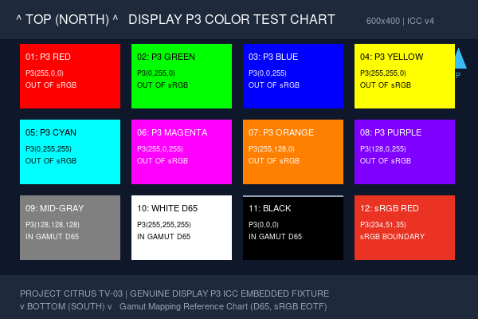

Isolated directory for TV-03 validation fixtures (EXIF, GPS, Orientation, Display P3 / ICC).
File: citrus_display_p3_test.png (600x400 px, 36.7 KB, 8-bit Truecolor RGB with embedded Display P3 ICC profile in iCCP chunk)

File: DisplayP3.icc (536 bytes, ICC v4.0.0 Display Profile from Apple / Color.org Registry)
File: citrus_exif_gps_metadata_test.jpg (600x400 px, 31.3 KB, embedded APP1 EXIF with Make, Model, DateTimeOriginal, GPS)